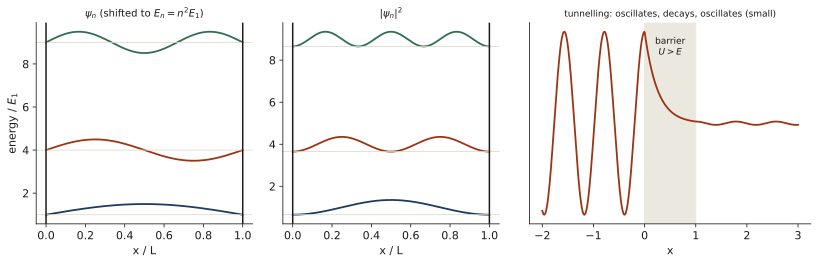

Learn
Wave properties of particles
Moving particles behave as waves of wavelength λ = h/p. The wave says where the particle is likely to be found, and confining or localising that wave forces quantised energies and the uncertainty principle. This doc covers Beiser ch 3 (all of 3.1–3.9) and the slides QM.tex:137 to :223.
Study path. Read Learn once, keep Reference open for the formulas and the "what to do without notes" list, then do Practice: try each question on paper before you open its solution.
De Broglie waves
If light, long thought to be a wave, has particle properties, it is natural to ask whether particles have wave properties. De Broglie proposed in 1924 that they do. A photon of momentum p has wavelength λ = h/p, and he suggested that the same relation holds for any moving particle, so that a body of mass m and speed v has the wavelength λ = h/mv. For everyday objects this wavelength is far too small ever to be noticed, which is why we never see a cricket ball diffract. For an electron accelerated through a few tens of volts, however, it is about an angstrom, the same size as the spacing of atoms in a crystal.
The wave function
What kind of wave is this? It is not a disturbance of any medium, and it carries no energy of its own. The quantity that varies is the wave function Ψ, and its meaning is statistical: the value of |Ψ|² at a given place and time is proportional to the probability of finding the particle there at that time. A large |Ψ|² means the particle is likely to be found there, and a small one means it is unlikely, but in any single measurement the particle is found at one definite point.
Phase and group velocity
A difficulty appears as soon as we try to calculate the speed of these waves. A wave of frequency ν and wavelength λ travels at the phase velocity νλ. Using E = hν = γmc² and λ = h/γmv gives a phase velocity of c²/v, which is greater than c for any real particle. The answer is that a particle is not represented by a single wave of one wavelength, which would extend uniformly through all space, but by a wave group formed by adding waves of slightly different wavelengths. The waves reinforce one another in a small region and cancel elsewhere, and it is this region of large amplitude that we identify with the particle. The group moves with the group velocity dω/dk, and when this is worked out for de Broglie waves it is found to equal v, the speed of the particle. The individual wave crests move faster than the group, but nothing physical travels with them.
Electron diffraction
The wave nature of electrons was confirmed by Davisson and Germer in 1927. They directed a beam of 54 eV electrons at a nickel crystal and found a strong reflected beam at an angle of 50°, exactly where Bragg's law predicts a diffraction maximum for waves of the de Broglie wavelength. Electrons, neutrons and even whole atoms have since been diffracted, and electron microscopes rely on the short wavelength of fast electrons to resolve detail far finer than visible light allows.
Particle in a box
The wave picture also explains why a confined particle can have only certain energies. If a particle is trapped in a box of width L with impenetrable walls, its wave function must vanish at the walls, just as a string fixed at both ends must have nodes there. Only waves that fit a whole number of half-wavelengths into the box are possible, so λₙ = 2L/n. With p = h/λ this gives Eₙ = n²h²/(8mL²). The energy is quantised, and the lowest value is not zero. A trapped particle can never be completely at rest.

Figure. Left and middle: the first three standing waves and their probability densities. Right: a wave function tunnelling through a barrier.
The uncertainty principle
The wave nature of matter leads directly to the uncertainty principle. A wave group that is confined to a small region Δx must be built from waves with a wide range of wavelengths, and hence a wide range of momenta Δp. A group with a narrow spread of momenta must be long. The product of the two spreads cannot be made smaller than about ħ/2, so that Δx Δp ≥ ħ/2. This is not a limitation of our instruments. It is a property of waves, and so of matter itself. Heisenberg illustrated the same principle with a thought experiment. To locate an electron with a microscope we must bounce at least one photon off it, and to locate it precisely we need short wavelengths. But a short-wavelength photon carries a large momentum, part of which it transfers to the electron in an amount we cannot know. The better we fix the position, the more we disturb the momentum.
Energy and time
A similar relation connects energy and time. To measure an energy to within ΔE we need a wave group whose frequency is defined to within Δν = ΔE/h, and that requires the group to last for a time Δt of at least about 1/Δν. The result is ΔE Δt ≥ ħ/2. An excited state that lives only a short time therefore has an energy that is not sharply defined, and the spectral lines it emits have a natural width. The uncertainty principle also gives quick estimates. An electron confined within a nucleus of size 10⁻¹⁴ m would need a kinetic energy of many MeV, far more than nuclear electrons are ever observed to have, which shows that electrons cannot be constituents of nuclei.